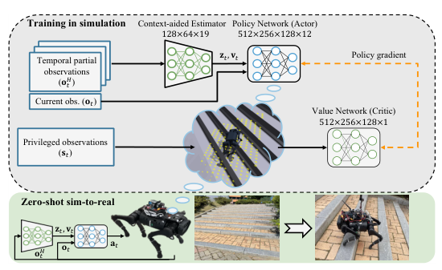
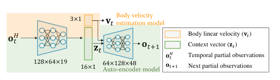
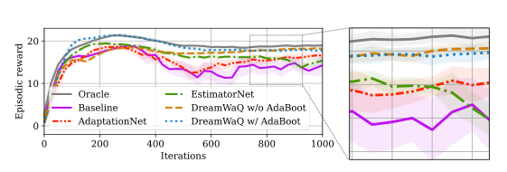
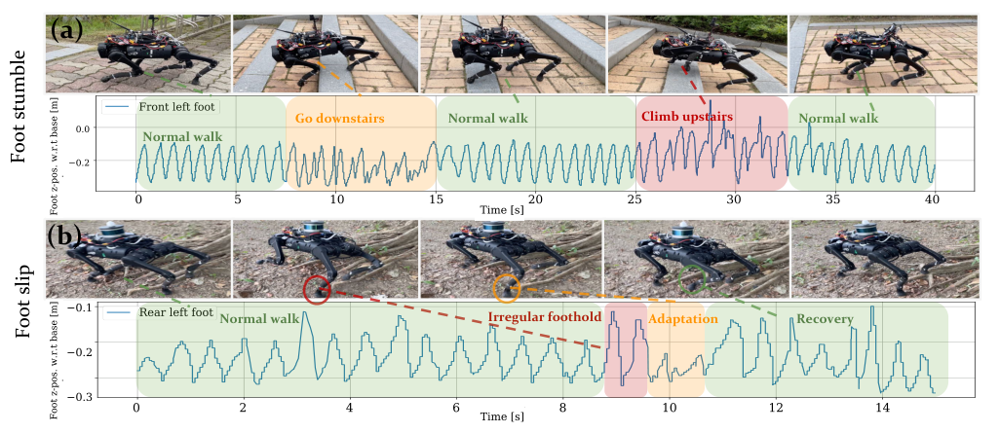

Background & Motivation
DreamWaQ 讓四足機器人只靠本體感測(IMU + 關節編碼器)走過崎嶇地形:訓練時用非對稱 actor-critic——critic 看得到高度圖與擾動等特權資訊,actor 只看時序本體觀測,被迫隱式地「想像」地形;再用 CENet(共享編碼器的 β-VAE)聯合估測體速 \(\mathbf{v}_t\) 與環境 context \(\mathbf{z}_t\)。單階段訓練、一張 RTX 3060Ti 一小時,零樣本部署到 Unitree A1,實地走完樓梯、泥濘坡與 430–465 m 長程野外。
DreamWaQ makes a quadruped walk rough terrain using proprioception only (IMU + joint encoders): training uses an asymmetric actor-critic—the critic sees privileged information (height map, disturbances) while the actor sees only temporal proprioceptive observations, forcing it to implicitly "imagine" the terrain; a CENet (shared-encoder β-VAE) jointly estimates body velocity \(\mathbf{v}_t\) and an environment context \(\mathbf{z}_t\). One training stage, one hour on a single RTX 3060Ti, deployed zero-shot on a Unitree A1 that walked stairs, muddy slopes, and 430–465 m outdoor courses.

如果只有 30 秒In 30 seconds
- 問題 — 感知式 RL 步行策略依賴相機/LiDAR,在惡劣天候會失效,也看不出雪地鬆軟、長草可穿越等物理性質;而純本體感測的既有做法(teacher-student 特權蒸餾)受行為克隆上限與兩階段訓練低效所困,長距離實地驗證有限。
- Problem — Perceptive RL policies depend on cameras/LiDAR that fail in adverse weather and cannot sense physical properties (soft snow, traversable tall grass); existing proprioception-only recipes (teacher-student privileged distillation) suffer a behavior-cloning bound and inefficient two-stage training, with limited long-distance field validation.
- 方法 — 非對稱 actor-critic:critic 看特權狀態 \(\mathbf{s}_t\)、actor 只看 \(\mathbf{o}_t^H\)(H=5),一階段學會「隱式地形想像」;CENet 用共享編碼器同時回歸 \(\mathbf{v}_t\) 並以 β-VAE 重建 \(\mathbf{o}_{t+1}\) 學 \(\mathbf{z}_t\);AdaBoot 依報酬變異係數自適應調 bootstrap 機率。
- Method — Asymmetric actor-critic: critic sees privileged \(\mathbf{s}_t\), actor sees only \(\mathbf{o}_t^H\) (H=5), learning "implicit terrain imagination" in one stage; CENet shares one encoder to regress \(\mathbf{v}_t\) and learn \(\mathbf{z}_t\) by β-VAE reconstruction of \(\mathbf{o}_{t+1}\); AdaBoot adapts the bootstrap probability by the reward coefficient of variation.
- 結果 — 學習曲線逼近能直接看高度圖的 oracle;抗推力 1.121 m/s、30 分鐘隨機走存活率 95.2%(baseline 僅 20.5%);Unitree A1 實地走完 430 m 庭園與 465 m、爬升 22 m 的山徑(約 10 分鐘)。
- Results — Learning curves nearly match an oracle with direct height-map access; withstands 1.121 m/s pushes with a 95.2% 30-min survival rate (baseline: 20.5%); a Unitree A1 completed a 430 m yard course and a 465 m hill with 22 m elevation gain (~10 min).
領域脈絡Field context
四足步行控制有兩條路。模型式管線(ANYmal、Mini Cheetah 系列)串起狀態估測、軌跡/步態優化與致動器控制,建模與調參成本高,線性化模型也限制了性能上限。學習式路線以 Rudin et al. 的大規模平行 RL(legged_gym)為基座;Miki et al. 的感知式策略登上 Science Robotics,但仰賴可靠的外感測堆疊。
Quadruped control has two lineages. Model-based pipelines (ANYmal, Mini Cheetah) chain state estimation, trajectory/gait optimization and actuator control, with heavy modeling/tuning cost and performance capped by linearized models. The learning-based line builds on Rudin et al. massively-parallel RL (legged_gym); Miki et al. put perceptive policies on Science Robotics, but they presuppose a dependable exteroceptive stack.
純本體感測這一支——Lee et al. 2020(Science Robotics)、RMA(Kumar et al. 2021)——用 teacher-student 特權學習:老師看模擬器特權資訊,學生用行為克隆模仿。Ji et al. 2022 則改為併行訓練顯式狀態估測器。DreamWaQ 站在這條線上,主張兩件事可以一次做完:特權資訊走 critic 就好(不用老師),context 與體速用一顆共享編碼器一起估。
The proprioception-only branch—Lee et al. 2020 (Science Robotics), RMA (Kumar et al. 2021)—uses teacher-student privileged learning: a teacher sees simulator-privileged info, a student imitates via behavior cloning. Ji et al. 2022 instead concurrently trains an explicit state estimator. DreamWaQ extends this line, arguing both can be folded into one pass: route privileged info through the critic (no teacher), and estimate context + body velocity with one shared encoder.
這篇的核心賭注是:特權學習不需要蒸餾。RL 演算法本身(PPO 的 actor-critic 互動)就足以把 critic 看到的特權資訊「壓」進 actor 的行為。這把過去的兩階段流程折成一段,訓練成本低到一張消費級 GPU 一小時。[導讀補充] 低門檻 + 開源基座,讓 DreamWaQ 之後成為大量四足 RL 工作的標準 baseline 與骨幹。
The core bet: privileged learning needs no distillation. The RL algorithm itself (PPO actor-critic interplay) suffices to squeeze the critic-side privileged information into the actor behavior. This folds the two-stage pipeline into one, cutting the cost to one hour on a consumer GPU. [guide note] The low barrier + open-source base made DreamWaQ a standard baseline and backbone for a wave of later quadruped-RL work.
核心洞見 · KEY INSIGHTSKEY INSIGHTS
這篇值得帶走的不是「又一隻會走的狗」,而是幾個訓練配方層面的觀念:
The takeaway is not "another walking robot" but several recipe-level ideas:
- Critic 就是特權通道。 把高度圖、擾動力只餵給 value network,policy 只拿本體觀測——非對稱 actor-critic 取代 teacher-student,一階段訓練,policy 可自由探索老師沒示範過的失敗狀態。
- The critic is the privileged channel. Feed height maps and disturbance forces only to the value network; the policy gets proprioception—asymmetric actor-critic replaces teacher-student: one stage, and the policy can explore failure states a teacher never demonstrated.
- 估測與運動要「共學」。 地形 context 與體速估測互相加持:CENet 的共享編碼器經 auto-encoding 同時學前向/後向動力學,在腳絆到樓梯時仍能準確估速——顯式估測器(EstimatorNet)此時會失準。
- Estimation and locomotion must co-learn. Terrain context and body-velocity estimation reinforce each other: the CENet shared encoder learns forward/backward dynamics via auto-encoding and stays accurate when a foot stumbles on stairs—where the explicit-only EstimatorNet breaks.
- 地形可以是 16 維潛變數。 「隱式地形想像」不是重建高度圖,而是把摩擦、彈性、障礙等性質壓進 \(\mathbf{z}_t\) 供 policy 調節步態——夠用就好,不必顯式感知。
- Terrain can be a 16-D latent. "Implicit terrain imagination" does not reconstruct the height map; it compresses friction, restitution and obstacles into \(\mathbf{z}_t\) for gait modulation—sufficient, without explicit perception.
- Bootstrap 要看火候。 AdaBoot 用跨環境報酬的變異係數當「學得夠好了嗎」的訊號:\(p_{\text{boot}}=1-\tanh(CV(\mathbf{R}))\),學得穩才用估測值訓練,避免早期估測雜訊毒害 policy。
- Bootstrap only when ready. AdaBoot uses the reward coefficient of variation across environments as a "learned enough?" signal: \(p_{\text{boot}}=1-\tanh(CV(\mathbf{R}))\)—train on estimates only once learning stabilizes, avoiding early estimator noise poisoning the policy.
- 硬體壽命也能寫進 reward。 新增 power distribution 獎勵 \(\mathrm{var}(\boldsymbol{\tau}\cdot\dot{\boldsymbol{\theta}})^2\),懲罰馬達出力不均,直接針對實機長程行走的過熱問題。
- Hardware longevity can live in the reward. A new power-distribution reward \(\mathrm{var}(\boldsymbol{\tau}\cdot\dot{\boldsymbol{\theta}})^2\) penalizes uneven motor loading, directly targeting overheating during long real-world walks.
Problem Diagnosis
現況 vs 痛點Status quo vs pain points
| 現有做法Existing approach | 它的痛點Its pain point |
|---|---|
| 模型式控制管線Model-based pipelines (ANYmal, Mini Cheetah…) | 狀態估測→軌跡優化→步態優化→致動控制的長鏈,需大量人工建模與調參;線性化模型壓抑了機器人的真實能力。A long chain of state estimation → trajectory optimization → gait optimization → actuation, demanding heavy modeling and tuning; linearized models suppress the true capability. |
| 感知式 RLPerceptive RL (Miki 2022, etc.) | 仰賴相機/LiDAR:惡劣天候與光照下會失效,且幾何看不出物理——雪看似堅硬其實鬆軟、長草看似不可通行其實能走。Depends on cameras/LiDAR: fails under adverse weather/lighting, and geometry misses physics—snow looks solid but is soft; tall grass looks impassable but is walkable. |
| 純本體感測既有工作Proprioception-only prior work (Lee 2020, RMA, Ji 2022) | teacher-student 蒸餾有性能上限與資料低效;實地展示多半短程,長距離、多變地形下常因估測誤差而失效。Teacher-student distillation has a performance bound and data inefficiency; field demos are mostly short-range, failing over long distances due to estimation errors. |
底層還有一個雞生蛋問題——表徵學習瓶頸(representation learning bottleneck):policy 要懂地形才能走得穩,但要走得夠廣才能學懂地形。所以策略與環境表徵必須聯合學習,不能拆開。
Underneath sits a chicken-and-egg issue—the representation learning bottleneck: the policy needs to understand terrain to walk robustly, yet must walk widely to learn terrain. Hence policy and environment representation must be learned jointly, not sequentially.
Gap 表 — 誰缺什麼,DreamWaQ 怎麼補Gap table — who lacks what, and how DreamWaQ fills it
| 方法Method | 限制Limitation | DreamWaQ 如何補上How DreamWaQ fills it |
|---|---|---|
| Teacher-Student (Lee 2020, RMA) |
行為克隆使學生 ≤ 老師;兩階段訓練低效;學生看不到老師早期經歷的失敗狀態。Behavior cloning bounds student ≤ teacher; two stages are data-inefficient; the student never sees failure states the teacher explored early on. | 非對稱 actor-critic:特權資訊只進 critic,一階段 RL,policy 全程自主探索。Asymmetric actor-critic: privileged info goes only to the critic; one RL stage; the policy explores throughout. |
| EstimatorNet (Ji et al. 2022) |
只顯式估體態,沒有環境 context;遇到沒學過的困難地形性能驟降。Explicit body-state only, no environment context; performance plummets on unseen hard terrain. | CENet 共享編碼器同時出 \(\mathbf{v}_t\) 與 \(\mathbf{z}_t\),auto-encoding 學前向/後向動力學。CENet shared encoder outputs both \(\mathbf{v}_t\) and \(\mathbf{z}_t\); auto-encoding learns forward/backward dynamics. |
| 固定機率 bootstrapFixed-probability bootstrapping (Ji et al. 2022) |
訓練早期估測雜訊大,bootstrap 反而傷害 policy。Early estimator noise is large; bootstrapping then hurts the policy. | AdaBoot:\(p_{\text{boot}}=1-\tanh(CV(\mathbf{R}))\),依學習成熟度自動調節。AdaBoot: \(p_{\text{boot}}=1-\tanh(CV(\mathbf{R}))\), auto-tuned by learning maturity. |
注意作者的定位:他們不是宣稱盲走勝過感知式系統,而是主張「當外感測不可靠或不可得時,本體感測能撐到什麼程度」。貢獻的重心在訓練框架(單階段特權學習 + 聯合估測),長程野外實驗則是給「撐得夠遠」的證據。
Note the positioning: the authors do not claim blind walking beats perceptive systems; they ask "how far can proprioception go when exteroception is unreliable or unavailable?" The core contribution is the training framework (one-stage privileged learning + joint estimation); the long outdoor runs evidence that it goes far enough.
Core Method
問題設定:POMDP 下的盲走Setup: blind walking as a POMDP
環境是無限視野的部分可觀測 MDP。policy 只能看到本體觀測 \(\mathbf{o}_t\)(45 維),由 IMU 與關節編碼器直接量得:
The environment is an infinite-horizon partially observable MDP. The policy sees only the proprioceptive observation \(\mathbf{o}_t\) (45-D), measured directly by IMU and joint encoders:
(角速度、機身座標的重力向量、速度命令、關節角、關節角速度、上一步動作。)歷史堆疊 \(\mathbf{o}_t^H=[\mathbf{o}_t\;\mathbf{o}_{t-1}\cdots\mathbf{o}_{t-H}]^T\),本文取 H=5。critic 才看得到的特權觀測是
(Angular velocity, gravity vector in the body frame, velocity command, joint angles, joint velocities, previous action.) The temporal stack is \(\mathbf{o}_t^H=[\mathbf{o}_t\;\mathbf{o}_{t-1}\cdots\mathbf{o}_{t-H}]^T\) with H=5. The privileged observation, visible only to the critic, is
其中 \(\mathbf{d}_t\) 是隨機施加在機身的擾動力、\(\mathbf{h}_t\) 是周圍地形的高度圖掃描。動作 \(\mathbf{a}_t\in\mathbb{R}^{12}\) 是繞站立姿勢的期望關節角:\(\boldsymbol{\theta}_{\text{des}}=\boldsymbol{\theta}_{\text{stand}}+\mathbf{a}_t\),由各關節 PD 控制器追蹤。
where \(\mathbf{d}_t\) is a random disturbance force on the body and \(\mathbf{h}_t\) a height-map scan of the surroundings. The action \(\mathbf{a}_t\in\mathbb{R}^{12}\) is the desired joint angle around the standing pose: \(\boldsymbol{\theta}_{\text{des}}=\boldsymbol{\theta}_{\text{stand}}+\mathbf{a}_t\), tracked by per-joint PD controllers.
關鍵 1:非對稱 actor-critic = 免老師的特權學習Key idea 1: asymmetric actor-critic = teacher-free privileged learning
policy \(\pi_\phi(\mathbf{a}_t\,|\,\mathbf{o}_t,\mathbf{v}_t,\mathbf{z}_t)\) 用 PPO 訓練;value network \(V(\mathbf{s}_t)\) 吃完整特權狀態。因為 advantage 由「看得見地形」的 critic 計算,梯度會把地形知識隱式地灌進只看本體感測的 policy——這就是「implicit terrain imagination」:policy 被迫從 \(\mathbf{o}_t^H\) 推斷 \(\mathbf{d}_t,\mathbf{h}_t\) 的效果。
The policy \(\pi_\phi(\mathbf{a}_t\,|\,\mathbf{o}_t,\mathbf{v}_t,\mathbf{z}_t)\) is trained with PPO; the value network \(V(\mathbf{s}_t)\) consumes the full privileged state. Since advantages are computed by a terrain-seeing critic, gradients implicitly distill terrain knowledge into the proprioception-only policy—this is "implicit terrain imagination": the policy is forced to infer the effect of \(\mathbf{d}_t,\mathbf{h}_t\) from \(\mathbf{o}_t^H\).
相對 teacher-student:只需一個訓練階段(資料效率大增);policy 全程用 RL 探索,不被老師的行為克隆上限綁住,也能經歷並學會處理失敗狀態。
Versus teacher-student: only one training phase (much better data efficiency); the policy explores with RL throughout, unbound by the behavior-cloning ceiling, and gets to visit and handle failure states.
關鍵 2:CENet — 一顆編碼器,兩個任務Key idea 2: CENet — one encoder, two jobs

policy 需要的 \(\mathbf{v}_t\)(體速)與 \(\mathbf{z}_t\)(context)由 CENet 從 \(\mathbf{o}_t^H\) 估出,總損失:
The \(\mathbf{v}_t\) (body velocity) and \(\mathbf{z}_t\) (context) the policy needs are estimated from \(\mathbf{o}_t^H\) by CENet, with total loss:
體速的真值 \(\mathbf{v}_t\) 來自模擬器;\(p(\mathbf{z}_t)\) 取標準常態(觀測已正規化為零均值單位變異)。共享編碼器讓「估體速」與「懂環境」互相校準:懂地形的表徵能在腳絆到時修正速度估計,反之亦然。
Ground-truth \(\mathbf{v}_t\) comes from the simulator; \(p(\mathbf{z}_t)\) is a standard normal (observations are normalized to zero mean, unit variance). The shared encoder cross-calibrates "estimating velocity" and "understanding the environment": a terrain-aware representation corrects velocity estimates during stumbles, and vice versa.
關鍵 3:AdaBoot — 看報酬變異數決定何時 bootstrapKey idea 3: AdaBoot — bootstrap scheduled by reward variance
訓練時 policy 可以吃「模擬器真值 \(\mathbf{v}_t,\mathbf{z}_t\)」或「CENet 估測值」。用估測值(bootstrap)能提升 sim-to-real 穩健性,但早期估測雜訊大,反而會學壞。AdaBoot 用 \(m\) 個域隨機化環境的 episodic reward 向量 \(\mathbf{R}\) 的變異係數決定 bootstrap 機率:
During training the policy can consume either simulator ground truth \(\mathbf{v}_t,\mathbf{z}_t\) or CENet estimates. Bootstrapping on estimates improves sim-to-real robustness, but early estimator noise corrupts learning. AdaBoot sets the bootstrap probability from the coefficient of variation of the episodic-reward vector \(\mathbf{R}\) over \(m\) domain-randomized environments:
直覺:各環境報酬還很分歧(CV 大)= 還沒學會 → 少 bootstrap;報酬齊了(CV 小)= 學穩了 → 多用估測值練「抗估測誤差」。
Intuition: rewards diverging across environments (large CV) = not learned yet → bootstrap less; rewards converged (small CV) = stable → train more on estimates to harden against estimation error.
訓練配方(一頁就能複現的程度)Training recipe (reproducible from one page)
域隨機化:負載 [−1, 2] kg、Kp/Kd/馬達強度係數 [0.9, 1.1]、質心偏移 ±50 mm、摩擦係數 [0.2, 1.25]、系統延遲 [0, 15] ms。成本:一台 i7-8700 + RTX 3060Ti 桌機,約 1 小時 ≈ 46 天真實世界經驗。
Domain randomization: payload [−1, 2] kg, Kp/Kd/motor-strength factors [0.9, 1.1], CoM shift ±50 mm, friction [0.2, 1.25], system delay [0, 15] ms. Cost: one i7-8700 + RTX 3060Ti desktop, ~1 hour ≈ 46 days of real-world experience.
reward 沿用既有工作(速度追蹤 + 穩定性懲罰),刻意不做 reward 工程以凸顯框架本身的貢獻;唯一新增的是 power distribution 項 \(\mathrm{var}(\boldsymbol{\tau}\cdot\dot{\boldsymbol{\theta}})^2\)(權重 −10−5),懲罰馬達功率分布不均、延緩實機過熱。
Rewards follow prior work (velocity tracking + stability penalties)—deliberately no reward engineering so gains credit the framework; the only new term is the power-distribution reward \(\mathrm{var}(\boldsymbol{\tau}\cdot\dot{\boldsymbol{\theta}})^2\) (weight −10−5), penalizing uneven motor power to delay real-world overheating.
符號白話對照Symbols in plain words
| \(\mathbf{o}_t,\;\mathbf{o}_t^H\) | 本體觀測(45 維)及其近 H=5 步的歷史堆疊——policy 與 CENet 的唯一輸入來源。Proprioceptive observation (45-D) and its H=5-step history stack—the sole input source for policy and CENet. |
| \(\mathbf{s}_t\) | 特權狀態:\(\mathbf{o}_t\) 加上真實體速、擾動力 \(\mathbf{d}_t\)、高度圖 \(\mathbf{h}_t\)。只有模擬器裡的 critic 看得到。Privileged state: \(\mathbf{o}_t\) plus true body velocity, disturbance \(\mathbf{d}_t\), height map \(\mathbf{h}_t\). Visible only to the critic in simulation. |
| \(\mathbf{v}_t\) | 機身線速度(3 維)。真值僅存在於模擬器;實機上只能靠 CENet 估——準不準決定生死。Body linear velocity (3-D). Ground truth exists only in simulation; on hardware CENet must estimate it—accuracy is life-or-death. |
| \(\mathbf{z}_t\) | 16 維環境 context 潛變數:摩擦、彈性、障礙等地形性質的隱式壓縮=「想像出的地形」。16-D environment-context latent: an implicit compression of friction, restitution, obstacles—the "imagined terrain." |
| \(\beta\) | β-VAE 的 KL 權重,調節 \(\mathbf{z}_t\) 的資訊瓶頸與解耦程度。KL weight of the β-VAE, trading off the information bottleneck / disentanglement of \(\mathbf{z}_t\). |
| \(p_{\text{boot}}\) | 本次迭代用 CENet 估測值(而非真值)訓練 policy 的機率,由報酬 CV 自動調節。Probability of training the policy on CENet estimates (vs ground truth) this iteration, auto-tuned by reward CV. |
| \(CV(\mathbf{R})\) | m 個隨機化環境 episodic reward 的變異係數(std/mean)=「還沒學會」的程度訊號。Coefficient of variation (std/mean) of episodic rewards over m randomized environments—a "not learned yet" signal. |
Experimental Evidence
學習曲線:逼近開天眼的 oracleLearning curves: approaching the clairvoyant oracle

關鍵讀法:EstimatorNet 起初高於 AdaptationNet,但迭代變多、遇到更難地形後性能驟降——顯式估測沒有 context 撐不住;而 DreamWaQ 全程領先、且幾乎追平 oracle,代表「盲走」的性能差距幾乎被補齊。
Key reading: EstimatorNet starts above AdaptationNet but plummets once harder terrains arrive—explicit estimation without context cannot cope; DreamWaQ leads throughout and nearly matches the oracle, i.e., the blind-walking gap is almost closed.
主結果表:抗擾動(Table III,模擬)Main results: robustness to pushes (Table III, simulation)
| 演算法Algorithm | 最大抗推速度 (m/s) ↑Max push (m/s) ↑ | 30 分鐘存活率 (%) ↑30-min survival rate (%) ↑ |
|---|---|---|
| Baseline (Rudin et al.) | 0.511 ± 0.053 | 20.51 ± 6.44 |
| AdaptationNet (RMA-style) | 0.714 ± 0.096 | 82.37 ± 2.49 |
| EstimatorNet (Ji et al.) | 0.871 ± 0.124 | 80.92 ± 5.73 |
| DreamWaQ w/o AdaBoot | 1.015 ± 0.121 | 90.71 ± 1.25 |
| DreamWaQ w/ AdaBoot | 1.121 ± 0.164 | 95.23 ± 1.61 |
每秒隨機方向推撞直到跌倒。DreamWaQ 抗推力是 baseline 的 2.2 倍、比最強估測式 baseline 高 ~29%;AdaBoot 本身再貢獻約 +0.11 m/s 與 +4.5% 存活率——這也是 AdaBoot 唯一的消融證據。
Random-direction pushes every second until the robot falls. DreamWaQ withstands 2.2× the baseline push and ~29% more than the strongest estimator baseline; AdaBoot itself adds ~+0.11 m/s and +4.5% survival—which is also its only ablation evidence.
指令追蹤與估測品質Command tracking & estimation quality
- 指令追蹤(Gazebo,10 分鐘隨機命令 ±1.0 m/s,五種子):以絕對追蹤誤差(ATE)比較,DreamWaQ 在 \(v_x,v_y,\omega_z\) 全項最低,配對 t 檢定 p < 10−4;AdaBoot 又顯著再降誤差。
- Command tracking (Gazebo, 10 min of random ±1.0 m/s commands, five seeds): by absolute tracking error (ATE), DreamWaQ is lowest on all of \(v_x,v_y,\omega_z\), paired t-test p < 10−4; AdaBoot significantly reduces error further.
- 估測誤差(模擬樓梯場景):平地上 CENet 誤差已較小(拜前向/後向動力學學習之賜);腳絆到樓梯時,EstimatorNet 的體速估測失準、CENet 仍準確——作者歸因於 context 對顯式估測的「條件化」效果。嚴重失準可能直接導致摔倒。
- Estimation error (simulated stairs): on flat ground CENet is already more accurate (thanks to forward/backward dynamics learning); when feet stumble on stairs, EstimatorNet mis-estimates velocity while CENet stays accurate—credited to context conditioning the explicit estimate. Severe mis-estimation can cause outright falls.
實機:樓梯反射與長程野外Hardware: stair reflexes and long-range outdoor runs

長程驗證:Course A(校園庭園,430 m)含連續坡地、會纏腳的濃密植被、雨後濕滑樓梯與泥濘坡;Course B(校園山徑,465 m、爬升 22 m,約 10 分鐘走完)含柏油、碎石與長坡,夏天馬達過熱下仍完成。作者稱這是A1 這種小型平台首次被展示能持續走完此類丘陵/庭園長程。軌跡由機背 RTK-GPS(10 Hz)記錄。
Long-range validation: Course A (campus yard, 430 m) has continuous slopes, leg-trapping vegetation, and post-rain slippery stairs and muddy slopes; Course B (campus hill, 465 m, 22 m elevation gain, finished in ~10 min) has asphalt, gravel and long climbs, completed despite summer motor heating. The authors claim this is the first demonstration of a small A1-class platform sustainably walking such hill/yard courses. Trajectories were logged by an onboard RTK-GPS (10 Hz).
實驗證明了什麼/沒證明什麼:證明了——單階段非對稱 AC + 聯合估測在同 reward、同架構、同種子的控制比較下全面優於三個本體感測 baseline,且可實機長程部署。沒證明——與感知式系統的對比、跨機型的可攜性、以及實地上與 baseline 的量化對比(野外部分只有 DreamWaQ 自己的 demo)。
What the experiments do / do not prove: They do—under controlled comparisons (same rewards, architecture, seeds), one-stage asymmetric AC + joint estimation beats three proprioceptive baselines across the board and deploys for long real-world runs. They do not—compare against perceptive systems, show cross-robot portability, or give quantitative field comparisons versus baselines (outdoor runs feature DreamWaQ alone).
Critical Reading
可被質疑的點Contestable points
- Baseline 是自行重現的:AdaptationNet「代表」RMA、EstimatorNet「代表」Ji et al.,但都被改成同 reward、同課程、同網路容量。這種控制變因固然乾淨,卻可能削弱了原方法精心調校後的實力——RMA 原版的兩階段課程與架構細節並未完整重現。「打贏自己重現的對手」與「打贏原作」不是同一句話。
- Baselines are reimplementations: AdaptationNet stands in for RMA, EstimatorNet for Ji et al., but both were refit to the same rewards, curriculum and network capacity. Clean control, yes—but it may understate the originals as carefully tuned systems—for example the original two-stage RMA curriculum and architecture details are not fully reproduced. Beating your own reimplementation is not the same as beating the original.
- 量化實驗全在模擬:Table III(抗推)、Fig.4(ATE)、Fig.5(估測誤差)都在 Isaac Gym / Gazebo。實機只有 DreamWaQ 單方的成功 demo,沒有實地成功率、跌倒次數、能耗等量化對照;「robustness and durability evaluation in the real world」這個貢獻宣稱,證據形式其實是影片。
- All quantitative results are simulated: Table III (pushes), Fig.4 (ATE), Fig.5 (estimation error) live in Isaac Gym / Gazebo. Hardware evidence is DreamWaQ-only success demos—no field success rates, fall counts, or energy metrics against baselines; the claimed "real-world robustness and durability evaluation" is, evidentially, video.
- \(\mathbf{z}_t\) 的語意未經檢驗:標題說「地形想像」,但論文沒有任何 probing 或視覺化證明 \(\mathbf{z}_t\) 真的編碼了摩擦/高度等地形性質;它也可能只是「對 policy 有用的任意時序特徵」。想像 vs 特徵,是敘事與證據之間的空隙。
- The semantics of \(\mathbf{z}_t\) are untested: the title says terrain imagination, yet no probing or visualization shows \(\mathbf{z}_t\) actually encodes friction/height properties; it could be any temporally useful feature. "Imagination" vs "feature" is a gap between narrative and evidence.
- 消融不完整:AdaBoot 只有 with/without 一組(且增益 ~0.1 m/s,在 ±0.16 的標準差內);沒有「拿掉 VAE 只留回歸」「拿掉共享編碼器」「H、β、latent 維度掃描」等關鍵消融,CENet 各設計的貢獻無法拆帳。
- Ablations are thin: AdaBoot gets one with/without pair (a ~0.1 m/s gain inside the ±0.16 std); no "VAE removed, regression only," no unshared-encoder variant, no sweeps over H, β, or latent size—the contribution of each CENet design choice cannot be attributed.
- 能力範圍其實不大:命令取樣 ±1.0 m/s、課程坡度上限 22°、樓梯以 A1 的腿長論並不高;作者也坦承必須先碰到障礙才能適應、高階樓梯要靠外感測。這是一篇「穩」的論文,不是「敏捷」的論文。
- The capability envelope is modest: commands sampled within ±1.0 m/s, curriculum slopes capped at 22°, stairs modest for A1 leg length; the authors admit obstacles must be touched first, and high-rise stairs need exteroception. This is a robustness paper, not an agility paper.
- 單一平台:所有結果都在 Unitree A1。框架宣稱通用,但沒有第二台機器人驗證可攜性(不同質量/腿型/致動器的遷移成本未知)。
- Single platform: everything is on a Unitree A1. The framework claims generality, but no second robot validates portability (transfer cost across mass/leg/actuator differences unknown).
給讀書會 / 審稿的犀利問題Sharp questions for a reading group / review
- Baseline 公平性:若用 RMA 原始碼、原始課程與兩階段訓練預算重跑 AdaptationNet,Table III 的差距會縮多少?「同 reward 同架構」對 teacher-student 方法是否反而是不利設定?
- Baseline fairness: rerun AdaptationNet with the original RMA code, curriculum and two-stage budget—how much of the Table III gap survives? Is "same reward, same architecture" actually a handicap for teacher-student methods?
- \(\mathbf{z}_t\) 可解釋性:對 \(\mathbf{z}_t\) 做線性 probing,能否解碼出摩擦係數或地形類別?若不能,「terrain imagination」的說法是否應該降級為「temporal context」?
- Interpretability of \(\mathbf{z}_t\): can a linear probe decode friction or terrain class from \(\mathbf{z}_t\)? If not, should "terrain imagination" be demoted to "temporal context"?
- AdaBoot 的必要性:+0.106 m/s 落在標準差內;跟簡單的線性退火 bootstrap 排程相比呢?CV 訊號在 reward 尺度改變時是否穩定?
- Is AdaBoot necessary? +0.106 m/s sits within one std; how does it compare to a simple linearly-annealed bootstrap schedule? Is the CV signal stable under reward rescaling?
- 實地量化:野外長走若讓 EstimatorNet/AdaptationNet 也跑同路線,跌倒率與完成率差多少?沒有這組數字,「實地更穩」還只是合理推測。
- Field quantification: run EstimatorNet/AdaptationNet on the same outdoor courses—what are the fall and completion rates? Without these numbers, "more robust in the field" remains plausible inference.
- 能力邊界:把課程坡度推過 22°、樓梯推到 A1 膝高,或命令推到 2 m/s,哪個組件先崩——policy、CENet 還是 PD 增益?
- Capability frontier: push slopes past 22°, stairs to knee height, or commands to 2 m/s—which component breaks first: policy, CENet, or the PD gains?
Takeaways
對你研究的啟發Implications for your research
- 特權資訊優先考慮走 critic:只要特權資訊只在模擬器裡存在(地形、擾動、精確狀態),非對稱 actor-critic 是比 teacher-student 更便宜的第一選擇——一階段、無 BC 上限、可探索失敗狀態。先試它,不夠再蒸餾。
- Route privileged info through the critic first: whenever privileged signals exist only in simulation (terrain, disturbances, exact state), asymmetric actor-critic is the cheaper first choice over teacher-student—one stage, no BC ceiling, failure-state exploration. Try it before distilling.
- 估測器加上自監督重建頭:顯式回歸(體速)+ VAE 式「預測下一步觀測」共享編碼器,是把動力學知識灌進估測器的通用做法,特別是在接觸豐富、易打滑絆腳的場景。
- Give estimators a self-supervised reconstruction head: explicit regression (velocity) + a VAE-style next-observation head on a shared encoder is a general way to inject dynamics knowledge into estimators—especially in contact-rich, slip-prone settings.
- 把「何時信任學生」寫成訊號:AdaBoot 的 \(1-\tanh(CV)\) 排程是個可移植的小工具——任何「用估測值取代真值訓練」的課程,都可以拿跨環境報酬變異數當開關。
- Turn "when to trust the student" into a signal: the \(1-\tanh(CV)\) schedule is a portable gadget—any curriculum that swaps ground truth for estimates can gate on cross-environment reward variance.
- 硬體目標寫進 reward:power distribution 項提醒我們,長時部署的痛點(過熱、磨損)可以直接變成可微分的訓練目標,不必等到部署才處理。
- Encode hardware objectives in the reward: the power-distribution term shows deployment pains (overheating, wear) can become differentiable training objectives instead of post-hoc fixes.
值得引用的點What to cite this paper for
| 當你要主張…When you claim… | 就引這篇Cite this for |
|---|---|
| 「特權學習不必 teacher-student 兩階段」"Privileged learning need not be two-stage teacher-student" | 非對稱 actor-critic 單階段訓練即逼近 oracle 的證據(Fig.3)。Evidence that one-stage asymmetric actor-critic approaches an oracle (Fig.3). |
| 「context 與狀態估測應聯合學習」"Context and state estimation should be learned jointly" | CENet 共享編碼器與樓梯絆腳情境下的估測對比(Fig.5)。The CENet shared encoder and the stumble-case estimation comparison (Fig.5). |
| 「純本體感測可支撐長程野外行走」"Proprioception alone can sustain long outdoor walks" | A1 的 430 m / 465 m(爬升 22 m)實地展示。The 430 m / 465 m (22 m gain) field demonstrations on an A1. |
| 「bootstrap 排程要看學習成熟度」"Bootstrapping should track learning maturity" | AdaBoot 與 Table III 的 with/without 對比。AdaBoot and the with/without contrast in Table III. |
Lee 2020(teacher-student 盲走)→ RMA 2021(蒸餾出 adaptation module)→ Ji 2022(併行顯式估測器)→ DreamWaQ 2023(非對稱 AC + VAE context,單階段)。[導讀補充] 之後的估測式四足工作(含作者自己的 DreamWaQ++)多以本篇為骨幹或 baseline;它與 Walk These Ways 等「行為多樣性」路線互補——一個攻穩健的隱式估測,一個攻步態的可控多樣性。
Lee 2020 (teacher-student blind walking) → RMA 2021 (distilled adaptation module) → Ji 2022 (concurrent explicit estimator) → DreamWaQ 2023 (asymmetric AC + VAE context, one stage). [guide note] Later estimator-centric quadruped work (including the authors own DreamWaQ++) builds on or benchmarks against it; it complements the "behavior diversity" line (e.g., Walk These Ways)—one pursues robust implicit estimation, the other controllable gait multiplicity.
DreamWaQ 證明:給 critic 開天眼、給 actor 一顆會自監督的估測小腦,盲走四足就能用一張消費級 GPU、一個小時練到逼近看得見地形的 oracle,並在真實世界走完數百公尺的樓梯、泥坡與山徑——代價是它只能「摸著地形過河」,事前避障仍得還給視覺。
DreamWaQ shows that with a clairvoyant critic and a self-supervised estimator cerebellum, a blind quadruped can train in one hour on a consumer GPU to near-oracle performance and walk hundreds of meters of real stairs, mud and hills—at the cost of feeling its way by contact, leaving pre-contact avoidance to vision.